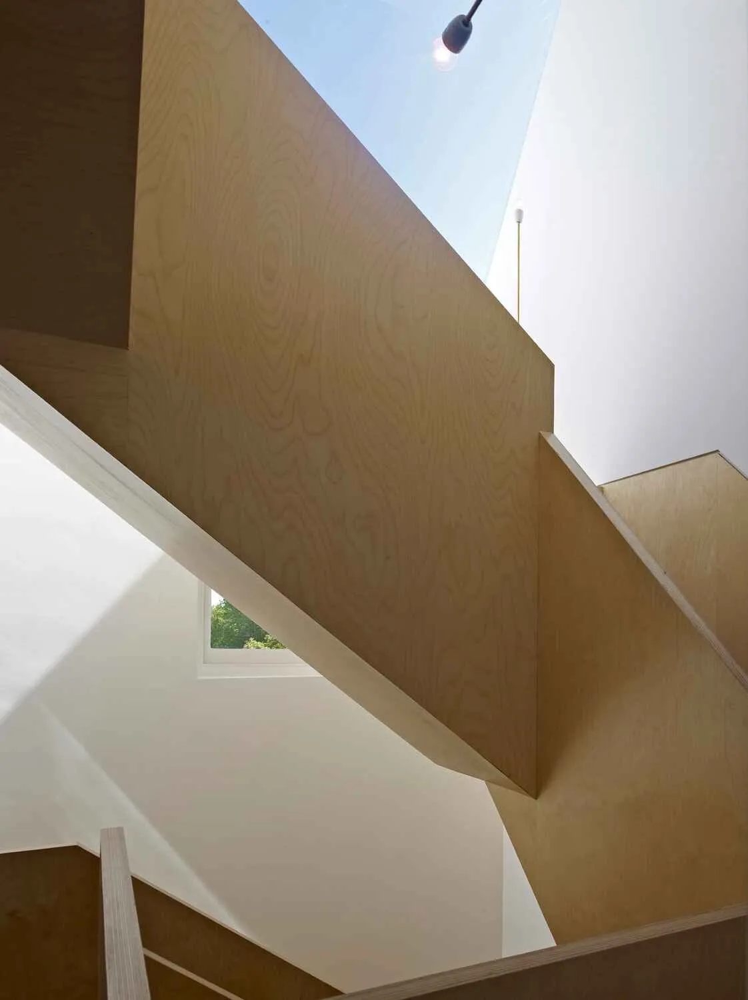
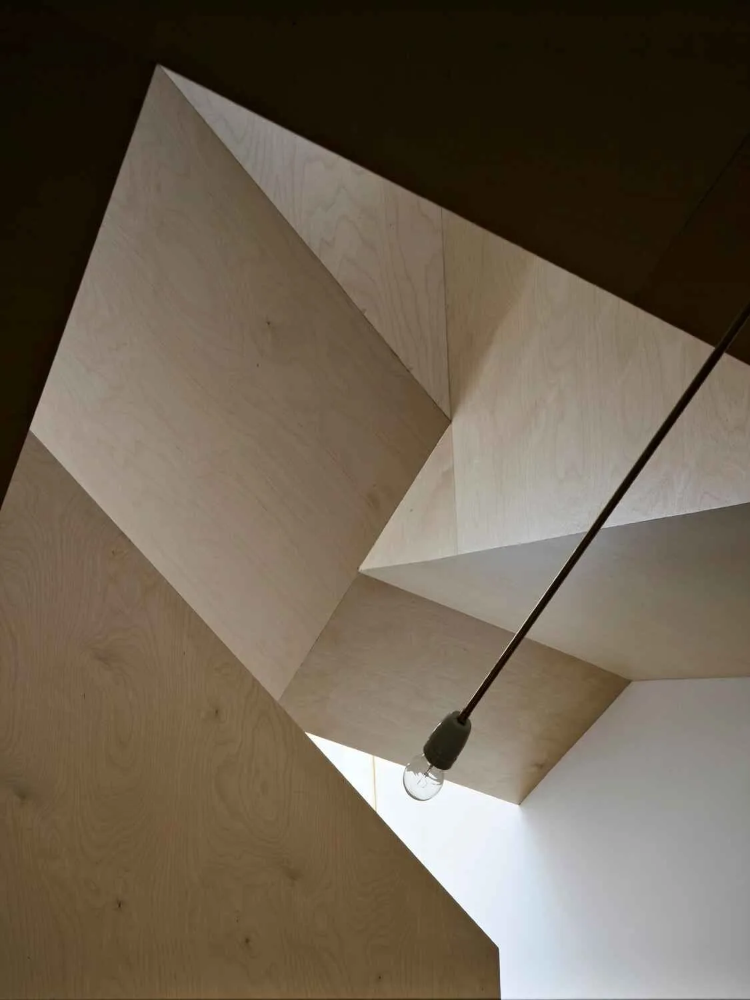
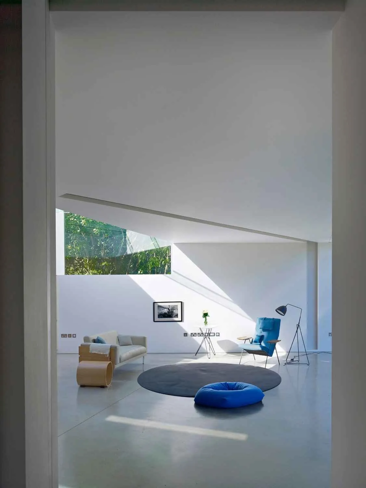
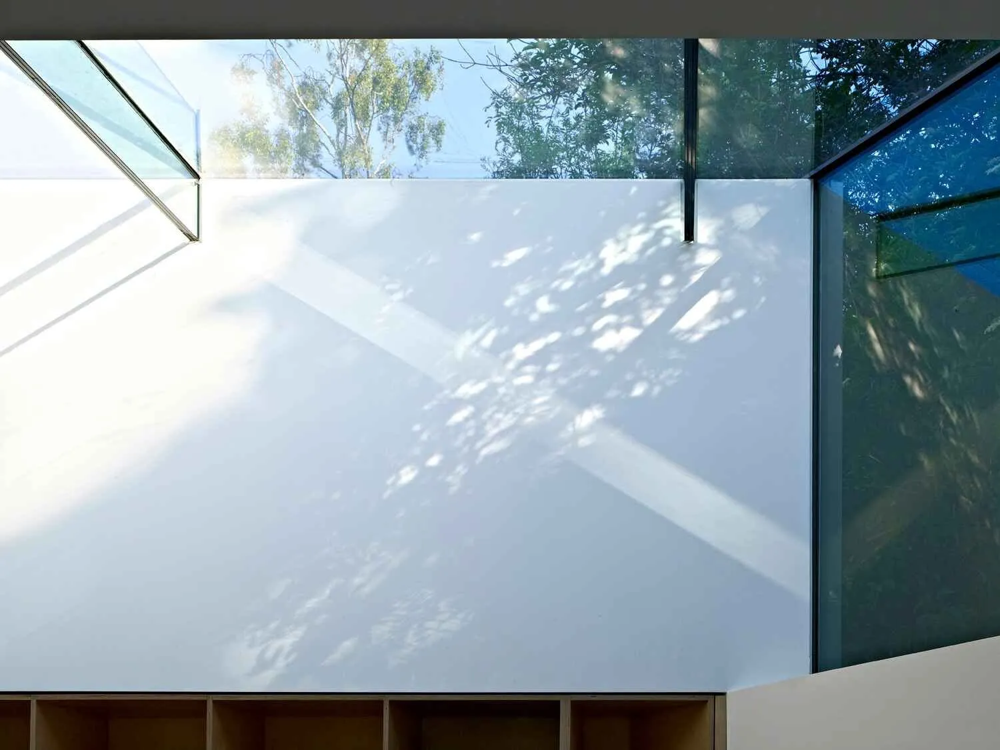

Folded House
A six-bedroom Islington house reordered around a triple-height square spiral stair in birch plywood, with ocular rooflights set into the roof above.
A house held by its stair.
The brief was for a young family — six bedrooms, a long programme, and a balance between drama and quiet. The house needed a new entrance sequence, an extension to the back, and a way of bringing the floors together without making the plan feel like a thoroughfare.
The move was a single piece of folded birch plywood that does the work of a stair, a kitchen and the storage along one wall. The stair rises as a triple-height square spiral; a large skylight at the top drops morning light all the way down. A side entrance sits underneath, half-hidden.
Ocular rooflights set into the roof give the upper floors more light and views of the garden tops. The new kitchen folds along the same plywood plane and opens to the garden through wide glazing.
Daily Telegraph Homebuilding & Renovating Award winner 2012; RIBA London Award shortlist 2013.


"A single piece of plywood, folded. Stair, kitchen, storage — all one move."
Studio

What it's made of.
Folded House, Islington — materials, all on one surface.

- Pale Baltic birch plywood face veneer Signature stair and ceiling lining
- Matte black powder-coated steel Rooflight framing and pendant fitting
- Brushed-silver anodised aluminium frame Glazing frame
- Birch plywood end-grain edge Exposed plywood edges of the folded geometry
- White matt-paint plaster wall Walls
- Frameless clear float glass Ocular rooflight
- Pale polished concrete Ground-floor flooring
- Off-white linen upholstery Living-room sofa